Højstrup Mark
Schiffssetzung(en)


22 - Højstrup Mark - Letztes Update 05.08.2025
| Navidaten: 57.05381 9.00057 oder: Tømmerbyvej 105, 7741 Frøstrup |
Direkt östlich des Tømmerby-Fjord und nur getrennt von der jetzigen Landstraße liegt der Højstrup-Grabplatz. Zur Wikingerzeit stand das Wasser des Limfjords höher als heute und reichte bis zum Rand dieses Grabplatzes. Es handelt sich um einen typischen nordjütischen Wikingergrabplatz, kleiner als der entsprechend größere von Lindholm Høj. Auf einer offenen Erika- und grasbekleideten Fläche finden sich 37 kleine Grabhügel und 3 Schiffssetzungen. Teils auf den Grabhügeln, teils zwischen ihnen sind nahezu 75 freistehende Bautasteine zu sehen, die bis 1,20 m über die Erde ragen.
Ein kleiner Teil der Anlage wurde 1881 von Prof. Helvig Conrad Christian Engelhardt (*20. September 1825 - 11. November 1881 - dänischer Archäologe - link-LIVES - Bestattungsprotokoll)
 Bildquelle: Fotografie um 1875 von Fotograf
Lauritz Olsen (*24.03.1834 -
25.05.1899)
-
Det Kgl. Biblioteks billedsamling - Lizenz:
Public Domain
Bildquelle: Fotografie um 1875 von Fotograf
Lauritz Olsen (*24.03.1834 -
25.05.1899)
-
Det Kgl. Biblioteks billedsamling - Lizenz:
Public Domain
im Auftrag des Nationalmuseum in Kopenhagen untersucht. Dabei war er von Prof. Julius Magnus Petersen (*04.09.1827 - 31.01.1917, Archäologischer Zeichner und Restaurator - link-LIVES)
 Bildquelle: Fotografie
von 1903 von Fotograf Marius Christensen
(*24.06.1874 -
25.06.1907) -
Det Kgl. Biblioteks billedsamling - Lizenz:
CC-BY-SA
Bildquelle: Fotografie
von 1903 von Fotograf Marius Christensen
(*24.06.1874 -
25.06.1907) -
Det Kgl. Biblioteks billedsamling - Lizenz:
CC-BY-SA
siehe unten - unterstützt worden.
Die Gräber wiesen unterschiedliche Bestattungsformen auf. Teils fanden sich unverbrannte Leichen, mit dem Kopf nach Westen, die in einem Sarg oder ähnlichen Behältnis bestattet worden waren, teils Brandgräber, wobei die verbrannten Knochen in einer Kohle- und Steinschicht seltsam verstreut lagen. In einem Grab fand sich ein Frauenskelett, das in einem Wagengestell lag und nach heidnischer Sitte Grabbeigaben beinhaltete. Es fand sich hier ein eisernes Messer mit einem Silberband um den Griff, vier Glasperlen sowie Teile eines bronzenen Bandes und einige Stückchen Goldblech. Die Funde werden heute im Nationalmuseum in Kopenhagen aufbewahrt.
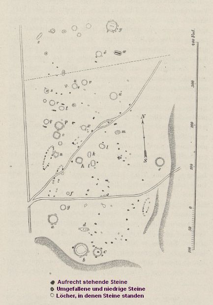 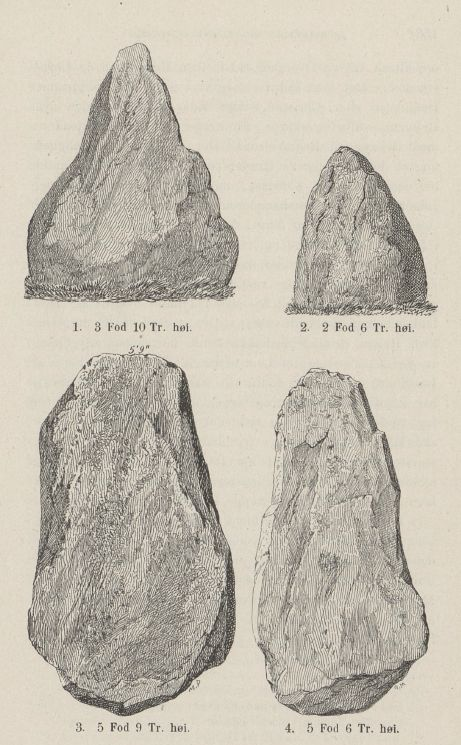 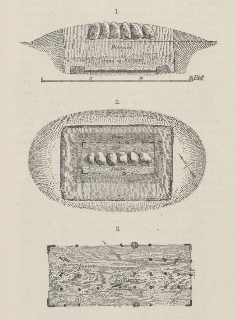
Quelle: Aarbøger for Nordisk Oldkyndighed og Historie - 1881, S. 148 ff. - Legende zur Planskizze links von mir übersetzt - Bautasteine - Grabformen - untere Abbildung Befund eines hölzernen Sarges
Die Grabhügel sind eigentlich mehr Hügelchen, da nur wenige mehr als 0,50 m hoch sind. Die Mehrzahl ist rund, aber es finden sich auch ovale und dreieckige.
Die Schiffssetzungen, geformt aus gebogenen Bautasteinreihen, lassen sich noch erkennen, auch wenn die Steine teilweise entfernt wurden. Sie symbolisieren das Schiff, das den Toten in das Totenreich bringen sollte.
Einige der Bautasteinreihen, die heute alleine stehen, können womöglich Reste von Schiffssetzungen oder anderen Steinanlagen sein, die heute nicht mehr vorhanden sind. Aber es wurden auch sicher einzeln stehende Bautasteine errichtet. Diese Steine stehen nicht nur als Begrenzung um die Gräber herum, sondern sind Teil des damaligen Grabkultes. In einem der Hügel fanden sich 6 Bautasteine, die in einer Reihe über dem Grab standen, aber selbst vom Hügel abgedeckt waren.
In vergangenen Zeiten hat man viele Steine von dem Grabfeld entfernt und zu Schotter zerschlagen. Man nimmt aufgrund der durchgeführten Untersuchung an, dass ursprünglich etwa 125 Bautasteine auf dem Grabfeld errichtet worden waren. Um weitere Zerstörungen zukünftig zu vermeiden, wurde die Anlage nach der Untersuchung von 1881 unter Denkmalschutz gestellt.
In den Jahren 1913 und 1914 fand durch das Nationalmuseum Kopenhagen in der Person von Prof. Thomas Marius Thomsen (*14.06.1870 19.12.1941, Archäologe, Museumsinspektor, Ethnograf - link-LIVES)
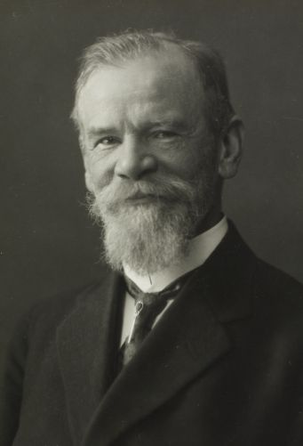
Bildquelle: Fotografie von 1935 von Fotograf Peter Elfelt - Det Kgl. Biblioteks billedsamling - Lizenz: Public Domaineine neuerliche Untersuchung des Areals und eine eigene nummerische Erfassung der einzelnen Objekte statt.
Ab dem 21.06.1937 wurde in Absprache zwischen Konservator Julius Raklev (*21.01.1878 26.09.1950)
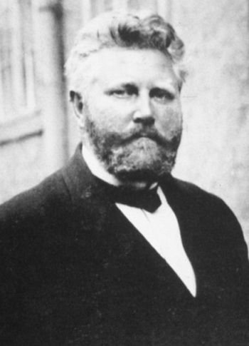
Dr. Therkel Mathiassen (*05.09.1892 - 14.03.1967, dänischer Archäologe und Kartograf - link-LIVES)
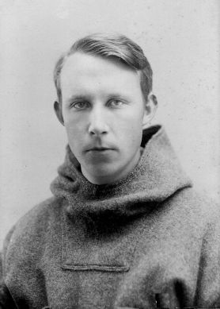
Bildquelle: Wikipedia - Lizenz: Public Domainvom Nationalmuseum Kopenhagen zusammen mit dem Apotheker Ove Jacob Rahbek (*01.07.1870 - 12.08.1951 - link-LIVES)
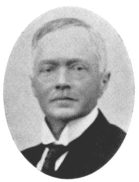
Bildquelle: - Aage Mikkelsen - Vikingegravpladsen og apotekeren - Thy Aarbog 2001 - S. 110 - Lizenz: CC-BY-SAaus Brønderslev eine Restaurierung durchgeführt.
Im Bericht von Konservator Julius Raklev an das Nationalmuseum in Kopenhagen steht (auszugsweise übersetzt): »Nach vorheriger Vereinbarung haben Apotheker Rahbek, Dr. Therkel Mathiassen und Unterzeichner am 2.6.1937 auf dem Wikingergräberfeld in Høistrup den Auftrag, mit dem Wiederaufbau der vielen gefallenen Steine zu beginnen. Die Arbeit daran erfolgt gemeinsam mit Hilfe von 3-4 Männern und Dampfkraft. Während der Arbeit von 1,5 Tagen wurden ca. 40 Stein wieder aufgerichtet und das Heidekraut wurde dort abgeschnitten, wo es am höchsten war. Auf dem Originalplan ist neben den wiederaufgerichteten Steinen mit Bleistift ein kleines Kreuz angebracht. Nachdem die Restaurierung abgeschlossen war, machte ich ein Foto der Grabstelle, von Süden gesehen, und einer der am besten erhaltenen Schiffssetzungen, die am weitesten südwestlich liegt, von Norden gesehen. An vielen Stellen erkennt man noch immer Vertiefungen im Boden, aus denen Steine entfernt wurden und das Bild der vielen Schiffssetzungen würde, wenn man Zementblöcke in die genannten Löcher einbringen würde, in der Zukunft besser erkennbar sein. Der Apotheker übernahm alle Kosten im Zusammenhang mit der durchgeführten Restaurierung und ließ anschließend auf dem Platz einen Stein mit einer Inschrift über das Geschehen errichten. Die Inschrift auf dem Stein lautet wie folgt: "ÅR 1000 REJSTE VIKINGER STEN FOR DERES DØDE. 1937 GENREJSTES DISSE STENE - Übersetzt: "Im Jahr 1000 errichteten die Wikinger diese Steine zum Gedenken an ihren Tod. 1937 wurden die Steine wieder aufgerichtet.
Angeblich wurde im Kirchenbuch von Middelfart zum Tod von Apotheker Ove Jacob Rahbek am 12. August 1951 vermerkt (übersetzt): Die Urne wurde in einer geschützten Wikinger-Grabstätte in Højstrup in der Gemeinde Tømmerby platziert. Über den Eintrag in dem entsprechenden Sterberegister findet sich dieser Eintrag allerdings nicht.
1943 fand nochmals eine Bestandsaufnahme durch den damaligen Direktor des Aalborg Historiske Museum Peter Riismøller (*14.03.1905 28.11.1973, Archäologe)
 Bildquelle: Fotografie
um 1970 -
KUML 1969 - Lizenz:
CC-BY-SA
Bildquelle: Fotografie
um 1970 -
KUML 1969 - Lizenz:
CC-BY-SA
statt, der eine neue Nummerierung vornahm, die nach der vorausgegangenen Restaurierung von 1937 erforderlich wurde. Die beginnt im Nordosten und verläuft in Richtung Westen.
In der dänischen Datenbank "Fund og Fortidsminder" ist jeder einzelne Fund auf dem Gräberfeld dokumentiert und aufgeführt, worüber die dort hinterlegten Informationen abgerufen werden können.
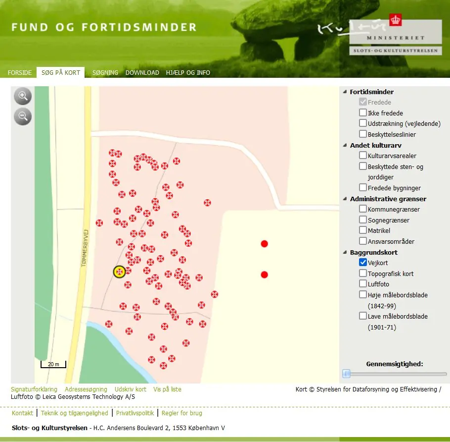
Beispielhaft habe ich in diesem Screenshot mit der gelben, runden Umrandung eine Hotspot-Verlinkung zu der größten Schiffssetzung vorgenommen, die darüber in einem neuen Fenster aufgerufen werden kann. Hinterlegt sind dort diese Infos (Von mir übersetzt):
Schiffssetzung: 20 m x 3,8 m x 0,20 m - orientiert Nord-Nordost - Süd-Südwest. Insgesamt 12 erhaltene Steine. Ein Bugstein im Süden, 6 Seitensteine im Osten und 5 Seitensteine im Westen. Spuren zu weiteren 5 ehemaligen Steinen im Westen und 3 ehemaligen Steinen im Osten, die einen Durchmesser zwischen 45 und 70 cm Durchmesser hatten und ca. 30 cm tief standen. Zwischen den westlichen und östlichen Steinreihen ist eine niedrige Erhebung zu sehen, die mit hohem Gras und der krautigen Pflanze "Schmalblättriges Weidenröschen" bewachsen ist. Die Schiffssetzung befindet sich im südwestlichen Teil des Schutzgebiets unmittelbar östlich der Nord-Süd-Straße, die entlang der gesamten Westseite des Schiffssetzung verläuft.
Anhand meiner Aufzeichnungen konnte ich nachvollziehen, dass ich die Örtlichkeit zuvor doch schon mehrfach besucht habe: Dienstag 21.08.1990 / Montag 11.07.1994 / Freitag 09.08.1996 / Freitag 23.08.2013.
Anlässlich meiner 2022er Jütland Wikingertour war ich am 01./02. Juni 2022 vor Ort (Im Auto auf Parkplatz übernachtet).
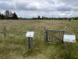 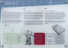 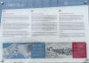


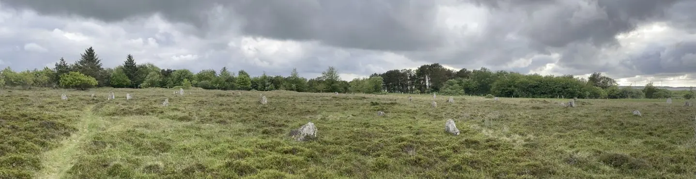
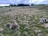 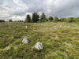 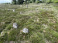 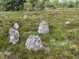 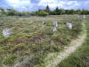 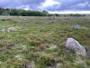 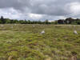 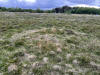 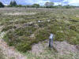 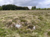 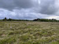


Dabei habe ich auch erstmals Fotos über ein ausgefahrenes Einhandstativ gemacht (aus ca. 4 m Höhe), das ich nach oben gehalten hatte, um vor allem die Schiffssetzungen besser wiedergeben zu können. Es hat in einigen Fällen ganz gut geklappt, wie ich meine!
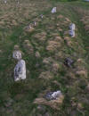 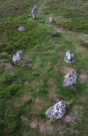 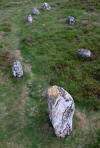 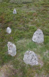


Dieses Luftfoto ist von der Webseite "Skråfoto" - Aufnahmedatum 17.07.2021 (Download 27.06.2022). Skråfoto ist eine Webanwendung, die von Klimadatastyrelsen weltweit kostenlos bereitgestellt wird - Freie Nutzung unter Beachtung der Lizenz: CC BY 4.0.
Über diese Webseite wird nach Eingabe der Anschrift - Tømmerbyvej 105, 7741 Frøstrup - das benachbarte Anwesen mit der identischen Anschrift mit mehreren Aufnahmen aus den verschiedenen Himmelsrichtungen wiedergegeben. Das Foto kann einfach heruntergeladen werden. Den Zuschnitt für das (benachbarte) Gräberfeld habe ich dann vorgenommen. Verfügbar sind einige Aufnahmen, die an verschiedenen Tagen aufgenommen wurden (05.04.2023, 17.07.21, 23.04.21, 11.05.19, 10.03.19 und 04. bis 06.05.17). Das unten eingefügte Bild vom 17.07.21 bietet aus diesem Blickwinkel die mit Abstand beste Wiedergabe / Kontrast der Steine. Zukünftig sollen diese Bilder alle zwei Jahre neu aufgenommen und über "Skråfoto" angeboten werden.
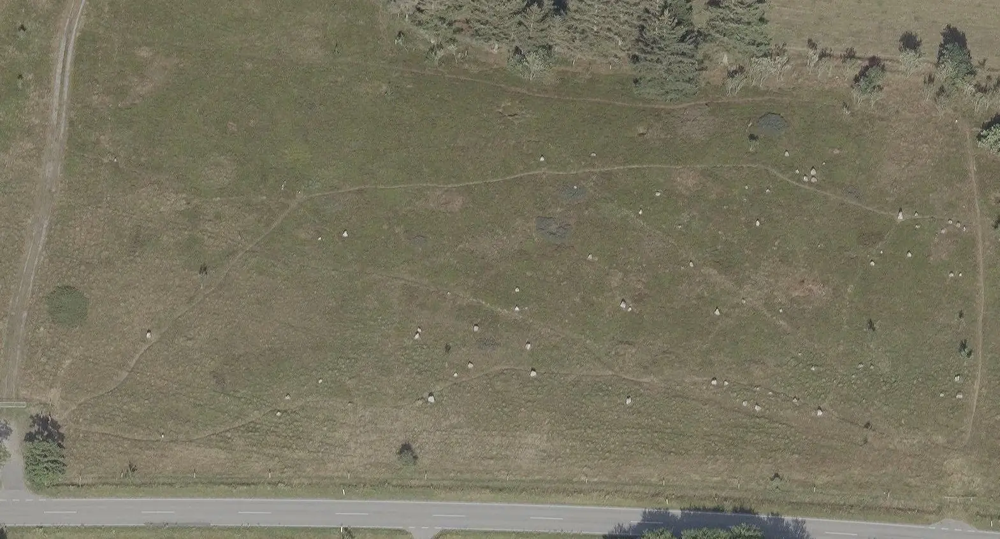
Die Qualität/Auflösung bei "Skråfoto" übertrifft alle anderen mir bekannten Luftfotos (z.B. GoogleMaps, Microsoft Bing, map.krak.dk usw.) um Längen!
Prof. Julius Magnus Petersen (*04.09.1827 - 31.01.1917, Archäologischer Zeichner und Restaurator - link-LIVES)
Bildquelle: Fotografie
von 1903 von Fotograf Marius Christensen
(*24.06.1874 -
25.06.1907) -
Det Kgl. Biblioteks billedsamling - Lizenz:
CC-BY-SA
hat am 1. September 1880 diese wunderschöne Ansicht von dem Begräbnisplatz - Akvarel af "Højstrup Bautastensplads" - gezeichnet.
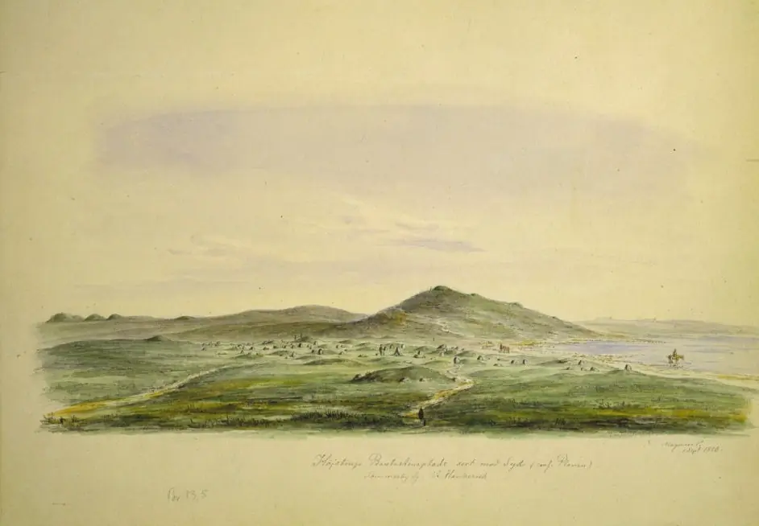
Im Internet entnommen bei: flickr.com/nationalmuseet - Lizenz: CC-BY-SA
Sophus Müller (*24.05.1846 - 23.02.1934, dänischer Prähistoriker - link-LIVES)
 Bildquelle:
Wikipedia - Lizenz:
Public Domain
Bildquelle:
Wikipedia - Lizenz:
Public Domain
macht in seinem in deutscher Sprache erschienenen Buch "Nordische Altertumskunde - Nach Funden und Denkmälern aus Dänemark und Schleswig, Band 2 - Eisenzeit" von 1898 ab der S. 257 Ausführungen zu diesem Begräbnisplatz.
Magnus Petersen schreibt in seinen Erinnerungen "Minder fra min Virksomhed paa Arkæologiens Omraade fra 1845 til 1908" von 1909 auf der S. 207:
"Den mærkeligste Samling af saadanne Grave fandt vi paa Højstrup Mark under en høj Banke i Tømmerby Sogn; det var en enestaaende mærkelig Gravplads af ca. 500 Fods Længde og 200 F. Brede. Her fandt vi 37 Langgrave og lave Runddysser, 3 Skibssætninger og flere Rester af andre Grave, ingen af Smaahøjene rejste sig over 3 Fod fra Jordsmonnet. Engelhardt lod nogle af dem udgrave og fandt Levninger af brændte Ben, Rester af ubrændte Skeletter, Lerpotter og et Par simple Øxer af Jern. I en Grav var der et noget rigere Udbytte, her laa Stumper og Rester af Træ, Jernnagler og Vinkelbeslag, der maa have hørt til en Ligkiste. Liget var helt fortæret, da Jordlaget over denne Grav som over de andre kun var et Par Fod, men vi fandt dog en Jernkniv og nogle Glasperler, hvilket betegnede Graven som hørende til den tidlige Jernalder. I Øsløse Sogn traf vi paa en lignende Gravplads, men hvad der udmærkede den førstes ved Højstrups var, at der over hele Pladsen imellem Gravene var rejst henved 75 Bautastene fra 5 til 6 Fods Højde, der gav det Hele et eget Oldtidspræg; jeg tegnede Bautastenene og tog Plan og et Billede af hele Gravpladsen, og Stedet blev af Engelhardt erhvervet lil Fredning."
Übersetzung: "Die seltsamste Ansammlung solcher Gräber fanden wir auf Højstrup Mark an einem Hochufer in der Gemeinde Tømmerby; Es war ein einzigartiger seltsamer Friedhof von ca. 500 Fuß Länge und 200 Fuß breit. Hier fanden wir 37 lange Gräber und niedrige runde Dolmen, 3 Schiffssetzungen und mehrere Reste anderer Gräber, keiner der kleinen Hügel erhob sich mehr als 3 Fuß aus dem Boden. Engelhardt ließ einige von ihnen ausgraben und fand Reste von verbrannten Knochen, Überreste von unverbrannten Skeletten, Tongefäße und ein Paar einfache Eisenäxte. In einem Grab gab es eine etwas reichere Ausbeute, hier lagen Holzstücke und -reste, Eisennägel und Winkelstücke, die zu einem Sarg gehört haben müssen. Der Leichnam war völlig verzehrt, da die Erdschicht über diesem Grab wie auch über den anderen nur wenige Meter betrug, aber wir fanden ein Eisenmesser und einige Glasperlen, die das Grab als aus der frühen Eisenzeit stammend beschreiben. In der Gemeinde Øsløse trafen wir uns auf einem ähnlichen Friedhof, aber was den ersten in Højstrup auszeichnete, war, dass über den gesamten Platz zwischen den Gräbern etwa 75 Bausteine von 5 bis 6 Fuß Höhe aufgestellt waren, was dem Ganzen seinen eigenen antiken Charakter verlieh; Ich zeichnete die Bautasteine und machte einen Plan und ein Bild des ganzen Gräberfeldes, und der Ort wurde von Engelhardt zum Schutz erworben."
Literaturhinweise:
Prof. Helvig Conrad Christian Engelhardt - Aarbøger for nordisk oldkyndighed og historie. 1881 - S. 147 ff. (S. 155 in der pdf-Datei)
Aage Mikkelsen - Vikingegravpladsen og apotekeren - Thy Aarbog 2001 - S. 107-110